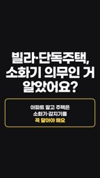
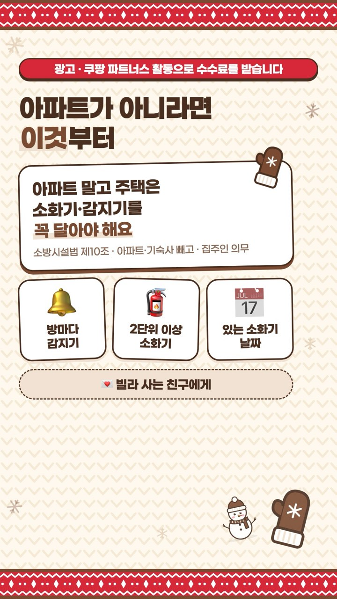

20번 영상
빌라 · 단독주택, 소화기 의무인 거 알았어요?
광고 이 게시물은 쿠팡 파트너스 활동의 일환으로, 이에 따른 일정액의 수수료를 제공받습니다.
영상에서 비교한 3가지예요. 누르면 쿠팡 검색 결과로 가요.
영상 속 비교표 바로 보기 ↓아파트가 아니라면 이것부터
아파트 말고 주택은 소화기·감지기를 꼭 달아야 해요
소방시설법 제10조 · 아파트·기숙사 빼고 · 집주인 의무
방마다 감지기 하나
🔎 개수 기준은 시·도마다 달라요(서울·대전 확인)
- 화재 감지기
- 💡 방마다 1개 이상(서울 조례)
- ✔ 시험 버튼 눌러 소리 확인
- 불나면 혼자 울리는 것(단독경보형)
- 2단위 이상 소화기
- 💡 세대·층마다 1개 이상(서울 조례)
- ✔ 라벨 능력단위 2 이상
- 스프레이형은 기준 못 채워요
- 있는 분말 소화기
- 💡 쓸 수 있는 기간 10년(시행령)
- ✔ 제조연월·압력계 녹색
출처: 소방시설법 제10조 · 서울시 조례 제5조 · 소방청(2026.9.8)

다 읽으셨나요?
영상에서 비교한 3가지, 여기서 바로 쿠팡에서 볼 수 있어요.